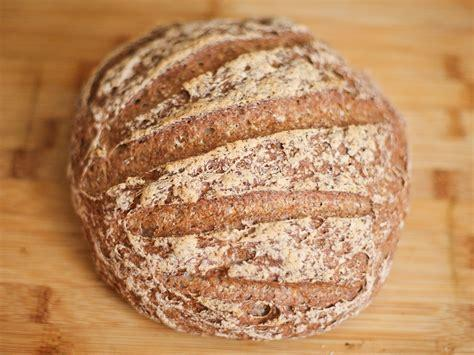

Gluten Free Artisan Bread

Healthy and easy GF bread you'll never miss regular bread again!
Ingredients
- 300g gluten free flour
- 280g luke warm water
- 4g salt
- 3g baker's yeast
- 1 soup spoon of honey
- 20g olive oil
- 28cm iron tray
Steps
- Add the yeast to the water
- While mixing the flour add the yeast and water mixture incrementally
- Add the olive oil to the mix
- Put the batter in a oiled bowl and cover
- Make a ball
- Let it rise for 2h
- Remove it and slightly push to remove the gaz, make a burrito of it, repeat 2 times
- Put it upside down in another bowl and let it rise for 30 more minutes
- Cook for 15 minutes at 250°c